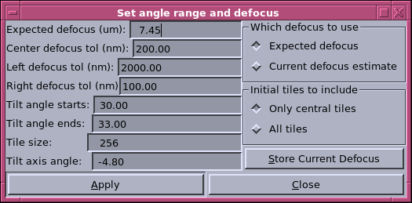

1. The X coordinate is normalized frequency.
1.0 equals the Nyquist frequency determined by the pixel size.
In our case the pixel
size is in nanometers, the Nyquist frequency in 1/nm would be
0.5*1.0/pixel_size.
The Edit field marked
with Z at the top center reports the found normalized frequency of the
first zero.
The absolute frequency of the first
zero in 1/nm is (normalized frequency)*(Nyquist frequency).
The Edit field marked with D at the
top center reports the found defocus in microns.
2. The red curve is the logrithm of the CTF
curve of the selected slices after subtracting the noise floor.
The green curve fits the red
curve from X1_starts to X1_ends which can be set in the fitting range
dialog.
The blue curve
fits the red curve from X2_starts to X2_ends which can be set in the
fitting range dialog.
The intersection point of
the green curve and the blue curve is where the program finds the first
zero of the CTF.
3. To zoom in an area, hold down the
left
mouse button to
draw rubber bands around that area.
To go back to previous zoom
level, push the Zoom_out icon.
4.
Use arrow keys to scroll vertically and horizontally.
5. Double clicking at a point in the plot will set
the found frequency of the first zero to the frequency that point is
located at.
The found defocus field will
change accordingly. This is usefull in manually locating the first zero
and finding its corresponding defocus.
Tool button usage:
 Zoom in.
Zoom in.
 Zoom out.
Zoom out.
 Bring up the fitting range
dialog.
Bring up the fitting range
dialog.
 Bring up the tilt angle
range
dialog.
Bring up the tilt angle
range
dialog.
 Adding Non-center Strips button. If
this button is enabled, the current estimation is based only on center
strips,
Adding Non-center Strips button. If
this button is enabled, the current estimation is based only on center
strips,
push this button to add non-center strips to the current estimation.
 Save
the defocus found for
the selected slices in the output file.
Save
the defocus found for
the selected slices in the output file.
 Print the plotted curves.
Print the plotted curves.
 Bring up Qt assistant to display
this page.
Bring up Qt assistant to display
this page.
The fitting range dialog:

x1 sets the fitting range for the green curve. Use the radio
button to choose linear or Gaussian fitting method.
x2 sets the fitting range for the
blue curve. Use the radio button to choose linear or Gaussian fitting
method.
Push the Apply button to make the changes made effective.
Push the Close button to close this dialog.
The tilt angle range dialog:

Expected defocus:
The first time this diaglog is brought up, the expected defocus value
the user specifies in the parameter file is shown.
When ctfplotter computes its first estimation, It finds the frequency
the first zero of the CTF curve with this original
expected defocus locates at. The segments of the CTF curve of the
input stack around that frequency are selected to be fitted.
For the subsequent estimation, ctfplotter uses a defocus to
compute shifts needed to align the CTF curves of non-center
strips with the CTF curve of center strips. By the radio button group
'Which defocus to use', the user can specify
whether to use the expected defocus shown in the 'Expected defocus
(um)' Edit field or the defocus previously found by the
program as the defocus for computing the shifts.
Center defocus tol:
The image region with defocus difference less than this tolerance is
defined as
the center region.
Left defocus tol:
The image region left to the center region with defocus difference less
than this
tolerance
will be included after the Adding Noncenter Strips button is pushed.
Right defocus tol:
The image region right to the center region with defocus difference
less than this
tolerance
will be included after the Adding Noncenter Strips button is pushed.
Tilt angle starts
Tilt angle ends:
The slices with tilt angle
great than the starting angle but less than the ending angle
will be included in the estimation.
Tile size:
The tile size in pixels.
Tilt axis angle:
The amount in degrees that the tilt axis deviates from being vertical
(Y axis).
'Initial tiles to include' radio button group:
Choose whether or not to include the noncenter strips to the estimation
after pushing the Apply button.
If the 'Only central tile' is checked, after pushing the Apply button,
only the center region defined by
'Center defocus tol' will be included and the 'Adding
Non-center Strips' button will be enabled.
The user needs to push that button to add the left region defind by
'Left defocus tol' and the right region
defined by 'Right defocus tol' to the estimation.
If the 'All tiles' is checked, after pushing the Apply button,
all regions (center, left, right) will be included in
the estimation and the 'Adding
Non-center Strips' button will be disabled.
Push the 'Store current defocus' to store the defocus found to the
output file.
Push the Apply button to make the changes made effective.
Push the Close button to close this dialog.
Refer to ctfplotter man page